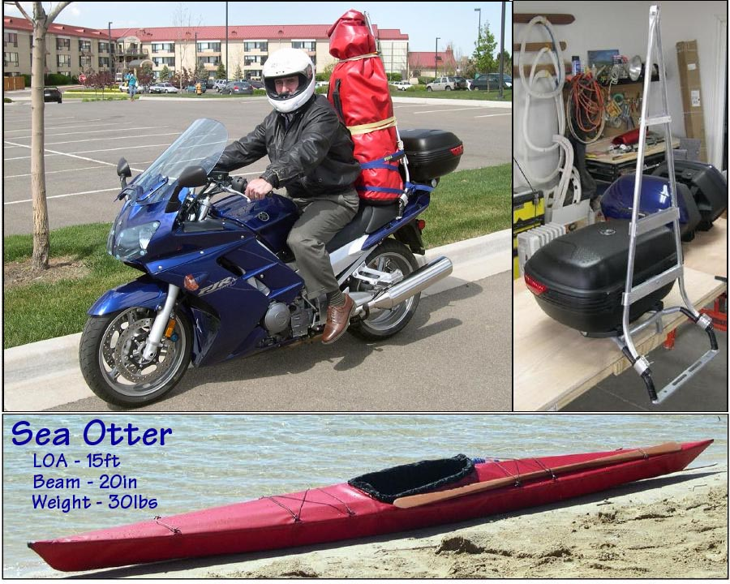

| (New) Motorcycle Transport / Sea Otter | Menu Previous Page Next Page |
|

The lightweight Sea Otter was designed for motorcycle transport. The aluminum carrier attaches to a "Givi" trunk rack with clamps. The carrier is also attached to the trunk bag with a single bolt. Cross wind road tests have shown the kayak carrier to be very stable. There is no contact between the rider and the bag. Several pages of details can be found in the Motorcycle / Folding Kayak Link. Use the (BACK) key to return.
|
|